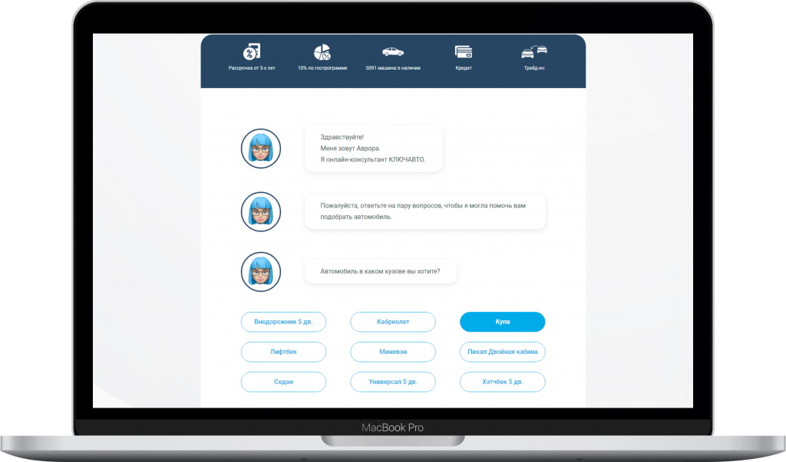
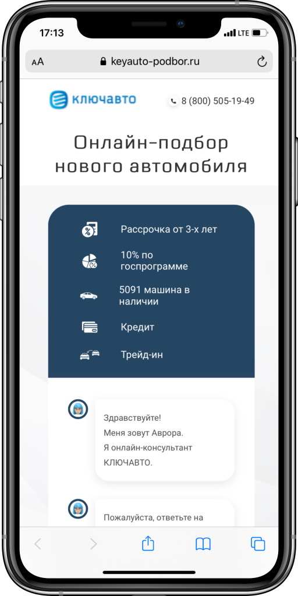
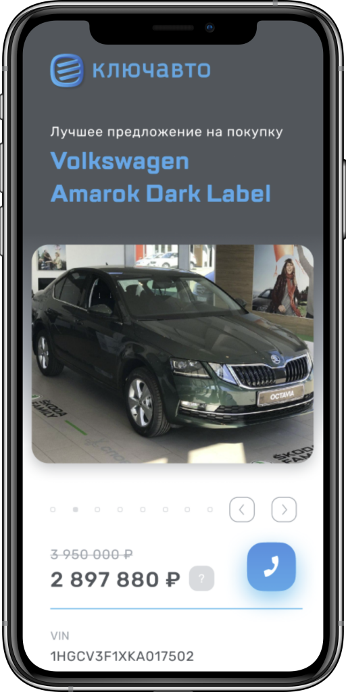
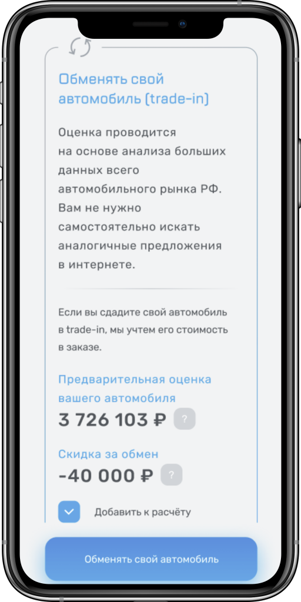
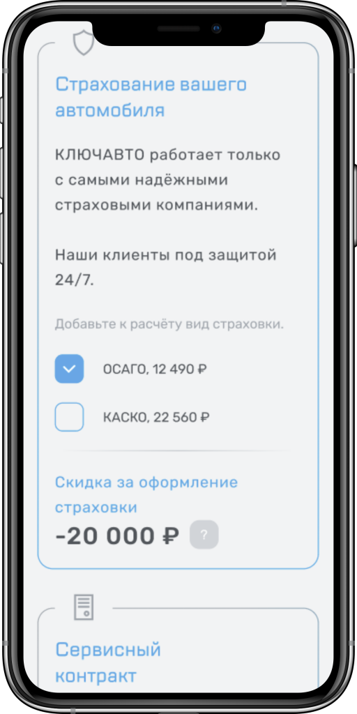
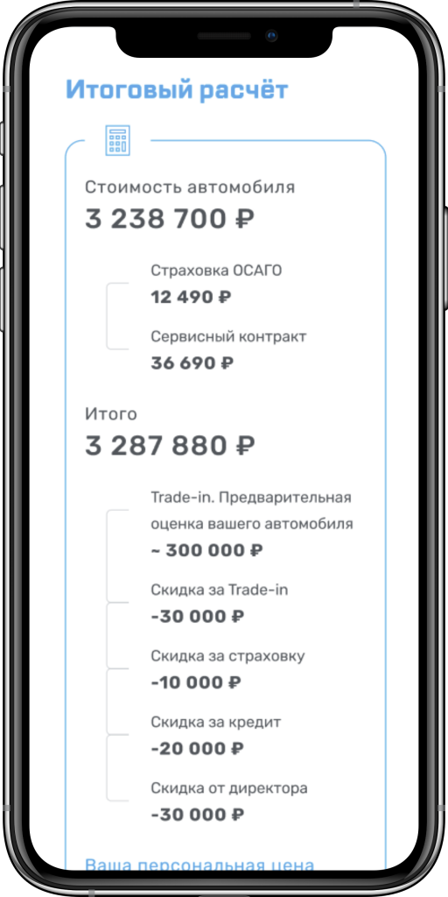

О проекте
Выбор автомобиля — шаг ответственный. Особенно когда есть великое разнообразие моделей на рынке. Прежде чем сказать в салоне заветное «Заверните мне эту тачку», хочется узнать про неё все мельчайшие детали, ознакомиться с предложениями и акциями автосалона, прикинуть, где можно сэкономить. Когда желанный транспорт находится буквально на расстоянии вытянутой руки, не всегда есть возможность трезво оценить все его плюсы и минусы. Поэтому КЛЮЧАВТО дарит своим клиентам возможность узнать все детали об автомобиле с помощью мобильного телефона и веб-страницу на мобильном устройстве нашего производства.
Компания
КЛЮЧАВТО — официальный дилер 29 ведущих автомобильных брендов в 18 городах России. Обширная дилерская сеть КЛЮЧАВТО представлена предприятиями в крупных городах Центрального, Южного, Северо-Кавказского, Уральского и Сибирского федеральных округов России.
Помимо продаж легковых, малотоннажных, грузовых автомобилей, спецтехники, КЛЮЧАВТО также предоставляет услуги официального сервиса автомобилей и имеет широкий перечень дополнительных возможностей для клиентов: кредитование, страхование, трейд-ин, лизинг, гарантийное и постгарантийное обслуживание, помощь на дорогах, удалённое урегулирование убытков, программы для корпоративных клиентов и другие.
Задача
Миссия КЛЮЧАВТО: «Мы создаём гармоничные отношения клиента с автомобилем». Следуя этой миссии, они предложили нам разработать классный сервис для своих клиентов. Представьте, как это удобно: вы приезжаете в автосалон, выбираете понравившуюся машину, оставляете свои контактные данные, и уже через считанные минуты к вам на телефон приходит ссылка на страницу с персональным предложением о покупке выбранного автомобиля. Круто же! Можно не принимать скоропалительных решений прямо в салоне, а досконально изучить все опции и предложения дома за кружечкой вечернего чая, например.
Или же можно вообще никуда не ехать, а просто открыть сайт с подбором автомобиля, пообщаться с умным онлайн-консультантом Авророй, которая поможет выбрать автомобиль, и забронировать его для просмотра и тест-драйва.
Мы прониклись этой идеей и согласились помочь заказчику в её реализации.
Что сделали
По статистике, 80% трафика на сайты сегодня идёт с мобильных устройств. Телефоны и планшеты уже прочно вошли в нашу жизнь. Смартфон сегодня — почти продолжение руки, а в чатах и переписках мы все проводим всё больше и больше времени. Поэтому для сервиса подбора автомобиля была выбрана доступная и понятная механика чат-квиза. Клиент заходит на сайт, и видит знакомый интерфейс чата, где Аврора, онлайн-консультант КЛЮЧАВТО, в лёгкой игривой манере задаёт несколько базовых вопросов о желаемом автомобиле и, после того, как получит ответы, предлагает продолжить более предметный разговор.
Чтобы ответы Авроры были «в тему», мы научили её взаимодействовать с базой данных дилерских центров КЛЮЧАВТО, поэтому она называет настоящие цены и модели автомобилей не просто потому что ей так хочется – она о них знает всё. Чат-квиз очень простой, его прохождение занимает 3-5 минут, и за это время позволяет клиенту прикинуть порядок цен и принять решение о визите в автосалон.


И вот мы переходим ко второму сервису, который мы разработали для КЛЮЧАВТО, —персональной странице предложения. Прежде всего, мы определились, как сервис будет узнавать о потребностях клиента. Для этого «подружили» его с 1С заказчика, из которого по определённому расписанию стали забирать поступающие файлы с заявками клиентов КЛЮЧАВТО. Сценарий получился следующий: отследили наличие новых заявок, получили файл из 1С, дополнительно обогатили его данными об автомобиле, сгенерировали страницу и отправили ссылку на неё на номер клиента — профит!
Ещё на этапе сбора требований к сервису определились, что ядром проекта станет Node.js. Насыщенный обмен данными, эффективное распределение ресурсов и асинхронное выстраивание потоков - для таких вводных Node.js нам показался идеальным вариантом. При разработке продукта интегрировались с несколькими сервисами. Для генерации и отправки SMS- сообщения использовали MindBox, для информации о пути клиента подключили сквозную аналитику CallTouch, настроили Яндекс.Метрику и отправку целевых писем во внутреннюю почту
заказчика. В результате получили целостную систему, скрывающуюся под капотом сгенерированной страницы. Кстати, пару слов о ней.
На странице клиент может посмотреть фотографии автомобиля и ознакомиться с его ключевыми параметрами, выбрать дополнительные опции или же определить варианты скидок, оформить кредит или застраховать автомобиль. Например, если у вас уже есть транспортное средство, вы можете получить скидку за трейд-ин. Таких скидок множество, для каждого клиента предложения уникальны, и действует ограниченное число дней.
Дизайн:




Результат
Заказчик получил два качественных сервиса, являющихся дополнительным инструментом для повышения лояльности и удобства покупателей. А клиенты КЛЮЧАВТО — приятнейший бонус и проявление заботы.
Так что, если перед вами стоит вопрос, в каком дилерском центре покупать автомобиль, можете не думать дважды — КЛЮЧАВТО предоставит вам максимально комфортный сервис. За сайтами и мобильными приложениями милости просим к нам, в NUTS Digital :-)